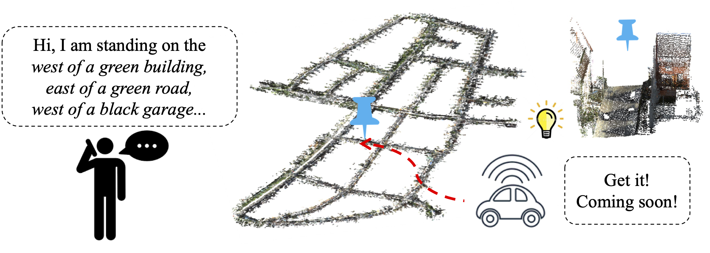
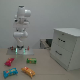
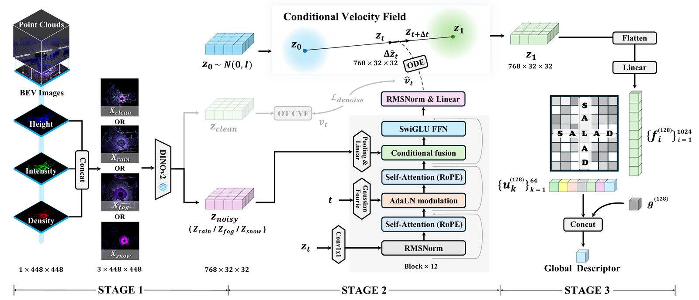
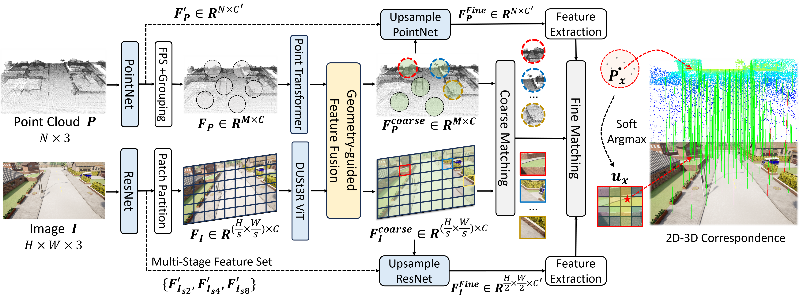
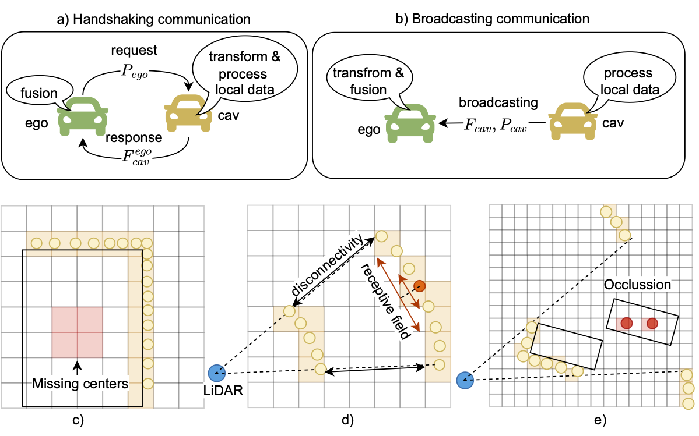
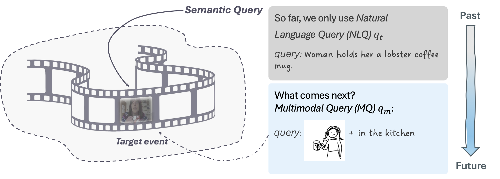
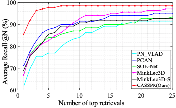
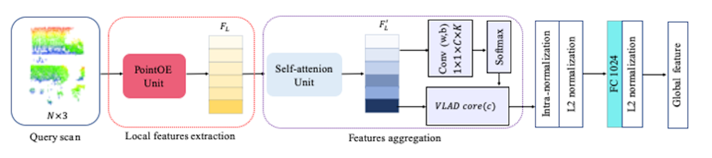

About
I am a Professor at the University of Science and Technology of China , where I lead the Spatial Intelligence Lab (SPIN) . I am also a Guest Senior Researcher in the Computer Vision Group at the Technical University of Munich, working with Prof. Daniel Cremers .
I obtained my PhD from TUM, supervised by Prof. Uwe Stilla and Prof. Daniel Cremers . I was also a visiting PhD student in the Visual Geometry Group at the University of Oxford, working with Dr. João Henriques .
Join SPIN! We are an international research team working closely with the Technical University of Munich, University of Cambridge, and University of Oxford . Students can engage in internationally co-mentored research, including the TUM–Cambridge project Semantic Superquadric Splatting for Structured 3D Scenes 3D Vision, Localization and Navigation, Autonomous Driving, and Embodied AI . To explore opportunities with us, please email me with your CV, transcript, and a brief description of your research interests.
Research
We aim to develop spatial intelligence that can localize, perceive, and reason in the 3D world —connecting multimodal sensing, geometry, and learning for robotics and autonomous systems.
Localization and Navigation Autonomous Driving Embodied AI
Selected Publications
† corresponding author · * equal contribution

Yan Xia*† , Letian Shi* , Yilin Di, João F. Henriques, Daniel Cremers
IEEE Transactions on Pattern Analysis and Machine Intelligence (TPAMI ), 2026
Paper / arXiv
Generalizing natural-language localization across diverse large-scale 3D point-cloud environments.

Yan Xia*† , Ran Ding* , Ziyuan Qin* , Guanqi Zhan, Kaichen Zhou, Long Yang, Hao Dong, Daniel Cremers
International Journal of Computer Vision (IJCV ), 2026
Paper / Project Page
A benchmark and occlusion-aware model for target-driven robotic grasping in cluttered scenes.

Xuewei Cao, Jiayue Yang, Zhiwen Zeng, Yanyong Zhang, Yan Xia†
Conference on Computer Vision and Pattern Recognition (CVPR ), 2026
Paper / Project Page
Weather-robust LiDAR place recognition through conditional latent velocity-field denoising.

Yan Xia*† , Yunxiang Lu* , Rui Song, Oussema Dhaouadi, João F. Henriques, Daniel Cremers
International Conference on Computer Vision (ICCV ), 2025
Paper / Project Page
Localizing traffic surveillance cameras within 3D reference maps using geometry-guided cross-modal matching.

Yunshuang Yuan, Yan Xia† , Daniel Cremers, Monika Sester
Conference on Computer Vision and Pattern Recognition (CVPR ), 2025
Paper
A fully sparse framework for accurate and efficient cooperative 3D object detection.

Gengyuan Zhang, Mang Ling Ada Fok, Jialu Ma, Yan Xia† , Daniel Cremers, Philip Torr, Volker Tresp, Jindong Gu
Conference on Computer Vision and Pattern Recognition (CVPR ), 2025
Paper
Localizing video events through flexible multimodal queries that combine language and visual cues.
Yan Xia*† , Letian Shi* , Zifeng Ding, João F. Henriques, Daniel Cremers
Conference on Computer Vision and Pattern Recognition (CVPR ), 2024
Paper / Project Page
Localizing a natural-language description directly within a large-scale 3D point cloud.

Yan Xia*† , Mariia Gladkova* , Rui Wang, Qianyun Li, Uwe Stilla, et al.
International Conference on Computer Vision (ICCV ), 2023
Paper
Cross-attention features for robust place recognition from a single 3D scan.

Yan Xia , Yusheng Xu, Shuang Li, Rui Wang, Juan Du, Daniel Cremers, Uwe Stilla
Conference on Computer Vision and Pattern Recognition (CVPR Oral ), 2021
Paper
Learning orientation-aware point-cloud descriptors with self-attention for place recognition.
View all publications on Google Scholar →